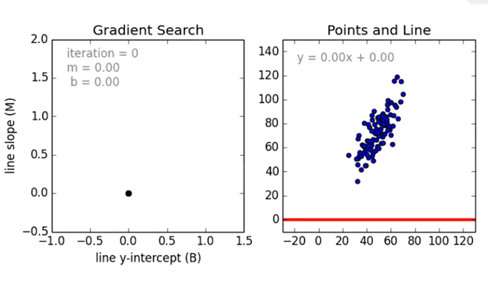

Linear Regression with Pure Math
Intro
Supervised Learning:
- We train the machine with well labeled samples. Thus, the data is tagged by someone/something (human or automated script) with correct answers already so this is why we call it supervised.
- In the process of learning, model learns from labeled samples of data so that it can predict labels for unseen data.
- During training, we can test model's accuracy by predicting labels for test samples and comparing predictions with test expected labels.
- The testing phase gives us some experience to optimize the model performance.
- There are two main methods of supervised learning:
- classification
- regression.
source: guru99.com
Unsupervised Learning:
- Model learns itself from unlabelled data in order to find some patterns.
- Model learns from unlabeled data which it's much easier to get as opposed to labeled data that requires manual work.
- In other words, a model is not being taught by example labelled data, it learns itself from uncategorized data.
- There are two main methods:
- classification - finding a pattern in a collection of uncategorized data and then clustering data based on that pattern.
- association - finding relationship between data for example people that buy a new home most likely to buy new furniture.
Comparison:
| Supervised Learning | Unsupervised Learning |
|---|---|
| Accepts input and output data. | Accepts only input data. |
| Labeled data to learn model. | Unlabeled data to learn model. |
| Model uses training data to learn a link between the input and the outputs. | Model doesn't use output data. |
| Highly accurate method. | Less accurate method. |
| Number of data category is known in advance. | Number of data category is unknown. |
Regression:
- Regression analysis is a predictive method that allows to investigate the relationship between y (dependent variable) and x (independent value).
- In regressing we want to predict continueous values as opposed to classification model where we want to predict the class of a case i.e. label or 0/1 category.
Regression application:
- Determining the strength of ralationships between variables - of how x values effects y values:
- e.g. relationship between employee's age and income, earnings and marketing spend. - Forecasting impact or effect on y values by changing one or more x values:
- e.g. how much income increases when 10 000 USD invested in the specific business field. - Trend and future values forcasting:
- estimating the sales in the future when trend is stable in time.
Features
App includes following features:
Demo
Linear Regression (LR):
- Approximating linear function to scatter data showing correlation between continuous x and y variable.
- LR output/prediction is the y value of x variable.
- When y values increase along with growth of x values then we have positive linear regression:
- the function equation:y = mx + c. - When y values decrease along with growth of x values then we have negative linear regression:
- the function equation:y = -mx + c. - Where:
- y is dependent variable,
- x is independent variable,
- m is a slope of the line,
- c is point of intersection with y axis.
LR fitting algorithm:
- Calculating m and c coeffeicients based on the historical x and y values.
 source: edureka
source: edureka
- Having m and c already calculated we use them as well as we use example x values to predict y values.
 source: edureka
source: edureka
- We treat the distance between actual values and predicted ons as an error.
 source: edureka
source: edureka
- Finding the best fit regression line with gradient search:
- the main purpose on this is to reduce the error = > the smallest error, the best fit line,
- performing n iterations for different m,
- using different values for m we calculate the equation:y = mx + c,
- after every iteration, a predicted value y is being calculated using different m value.
source: edureka - Comparing distances between actual values and predicted ones:
- when in a current iteration of the gradient search the distance between the predicted value and actual one (error) is minimum - for this iteration we take m value for the best fit line.
Workflow:
- Generating random data.
- Splitting data into training and testing subset.
- Axis x shows sample features and axis y shows corresponding values. Notice that in regession we consider only one sample with multiple features.
- Training model with training subset:
- x training features and y training corresponding values,
- training model depends on fitting linear function as much as possible to the data points,
- this fitting is being perfomed by algorithm of gradient search (see following paragraph). - Testing model with testing subset:
- putting x testing features through a model,
- model gives y predicted values,
- we compare y predicted values dividing them by y testing values getting model accuracy. - Once accuracy is satisfing, we can put through model new sample features which model has never seen.
- Model follows linear functon and adjusts y values for given x sample features.
- As above for 5 new features as an input, model gives back 5 corresponding values due to linear function.
Gradient Search:
- ...
- ...
Setup
Script requires libraries installation:
pip install matplotlibpip install numpy